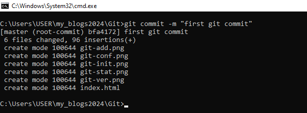
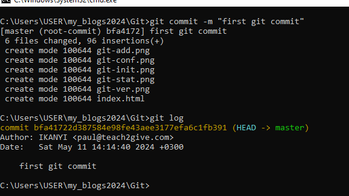
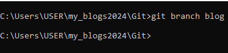
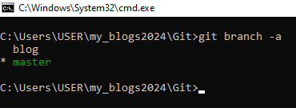
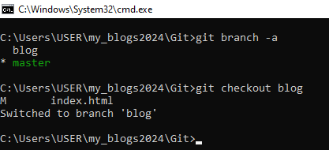
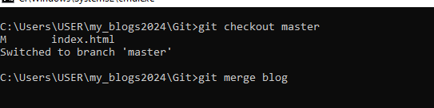
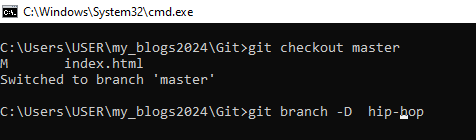

What is Git
Git is a version control system. A version control system allows you to manage your projects and helps in tracking changes and updates to your project files and repositories on GitHub and other repositories.
There exist multiple version control systems such as Mercurial, Azure DevOps server, Aws codecommit, and SVN.
In this blog we are going to delve into Git and GitHub.
Installing Git
To to check whether Git is installed you need to run the following command in your command prompt: "git --version" if git is installed the cmd will show the version of Git installed in your system.

A sceenshort of cmd showing the version of Git installed in my system.
If Git is not installed you will get an error in cmd stating that git is not recognized as internal or external command. Then you will have to install Git.
To install Git click here: Downlod Git When the download is done, click on install and follow the instructin provided.
Configuring Git
To configure Git you need to add your usernane and email address of your GitHub account.
Here is how to configure. In cmd run this commands:
-
git config --global user.name "dayzero"
-
git config --global user.email "paul@teach2give.com"

A sreenshot of cmd with configuration commands.
Initializing a Git repository
A Git repository is the .git/ folder inside a project. This repository tracks all changes made to files in your project, building a history over time.
To initialize a Git repository, open the foder where your project is located in the cmd and run this commmad; "git init"

A screenshot of cmd showing how to initialize a repository
Adding files to the staging area
The files in yor folder you inialized will appear as untracked files. To know files in your repository are tracked or untacked run this command:"git status"

To add a file to the staging area you need to run this command: "git add " . If you want to add all the files include a fullstop "." after add, or the name of file you want to add.

A screenshots of the add command
The files that we staged are now tracked files and are included in our repository.
Commiting changes
The files we have staged needs to have an explanation of what has happened. We add those explanations using the commit command as follows: git commit -m "first files"

screenshot of commit command
To view the previous commits history, we run the git log command.

Branches
Branches are separate versions of the main repository that we can manipulate without affecting the original repository.
They enable us to collaborate with others in projects. They also allows us to work on separate work space.
Creating a Branch
To create a branch enter this command in cmd: "git branch [name of branch]"

A screenshot of the branch command
Viewing all branches
To view all branches in a repository, simply run this command: git branch -a . The active branch will be highlighted in green and an asterisk.

screenshot image showing all branches
Switching active branch
To swicth a branch we use these command: git checkout [branch name]

A screenshot showing how to switch a branch
Merging a branch
To merge branches locally, use git checkout to switch to the branch you want to merge into. Next, use git merge and specify the name of the other branch to bring into this branch.
The commands: git checkout master and git merge blog

Deleting a branch
To delete a branch we use the following command:git branch -D [branch name]

screenshot of branch deleting command